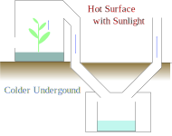

Water Distillation with Plants

<div id="section-main">

Purified water is essential resource to live, and large amount of it is required.
Distillation is easy and trusted way to purify water, but simply boiling water by fuel is not eco-friendly.
So here I propose solar powered distillation utilizing plants like cotton.
<br/><br/>

Plants absorb water from root then exhale it from leaves as transpiration.
Leaves are thin enough to get high tempereture with sunlight so be able to effectively evapolate water,
 and vessels can raise water with negative pressure and capillary action.
If you make similar structures they can be alternative to plants, but I think plants are easier to obtain.
Also grown plants can be used for another purpose like bio fuel.
<br/><br/>


Basic pattern is common distillering.
Put soil, plants and water which you want to distill into a pot still, then lead the air from the pot still to a tank.
Heat the plants with sunlight and put the tank in cold place like underground.
<br/>
Adding passive air flow might be a help.
Inhale dry air from bottom of the pot still, and exhale air around tank through heated chimney.
<br/><br/>

<figure>
  
  <figcaption>Example implementation of solar still with plants</figcaption>
</figure>
<br/>

Plants are not always available option, though.
If water source is too toxic or salty, they will be dead.
Some plants like cotton or sugarcane are relatively durable to salt and their harvests are useful.
Saltworts, glassworts and iceplants are more durable to salt, but I'm not sure they can evapolate enough amount of water.

</div>
